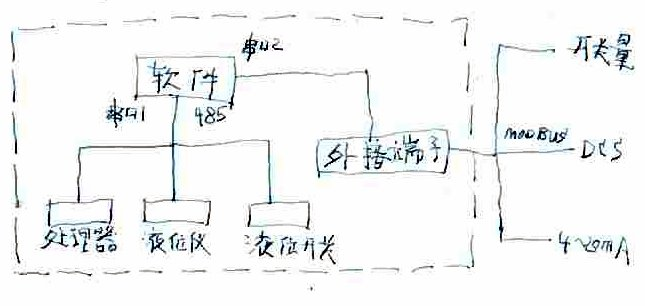
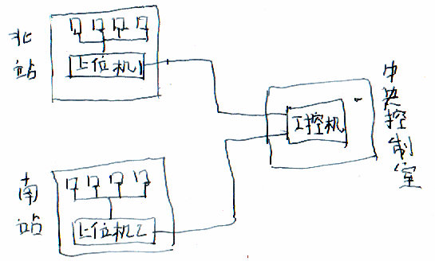
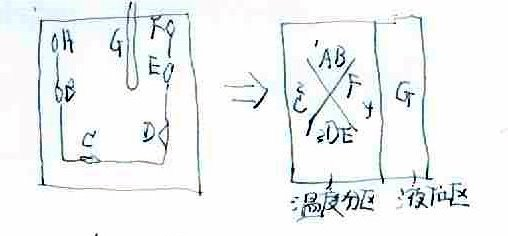

液位测量标准版软件需求分析
Table of Contents
1 引言
1.1 编写目的
液位测量需求分析在于为“液位测量标准版”软件提拱：
- 提出软件总体要求，作为软件开发人员，最终使用者了解的基础
- 提出软件性能要求，作为软件设计的基础
- 为软件测试提供依据
1.2 背景
公司在2011年开发了“测温标准版”、“应力测量标准版”软件，2012年提出的液位测量需求 是在己有测温的基础上，增加液位测量，因此确定“液位测量标准版”软件，依据“应力测 量标准版”架构，增加新的功能，满足需求。
1.3 参考资料
- 测温标准版软件需求分析
- 测温标准版软件第一次迭代
- 测温标准版软件第二次迭代
- 测温标准版软件第三次迭代
- 测温标准版软件使用说明书
- 应力测量标准版软件第一次迭代
1.4 缩略词
- 软件：“液位测量标准版”软件以下简称“软件”
- 设备：和软件连接的各种测量仪表，如：解调器，液位仪
- 客户端：设备参数设置软件
2 概述
2.1 总体要求
以下是相对于“应力测量标准版软件”的新要求：
- 兼容各种设备，包括658系列解调器，液位仪
- 多液位仪管理、查询、计算、显示、报警
- 液位计算的各种容错处理，故障检测
- 油罐的液位，探头分区设置，高低液位报警设置
- 液位高度图形化显示，有历史液位曲线
- 液位仪标定操作，液位仪的报警、复位控制
- * 历史数据查询、报表打印功能，报表可分时段、分页打印
- ** 用户权限管理
- ** 网内的任何一台计算机上观看油库的工作情况和查询油库的各种参数，进行网上查 询
- *** 处理后的信号通过RS485，以MODBUS-RTU协议传送给DCS系统
2.2 技术要求
- 工作温度：-40℃～80℃
- 环境湿度：≤95%
- 被测介质温度：-20℃～60℃
- 测量范围：0～15m
- 测温精度：1mm
- 浮球直径：95mm
- 分辨率：0.1mm
- 被测介质压力：常压
- 适用场合：所有储罐
- 传输距离：≤3km
2.3 使用特点
- 最终用户：机房值班人员，操作尽可能简单，不要开发用不着的功能
- 由于软件目的是监测，可靠性是第一位的，不能漏报，误报，精度达到指标
- 有完善的实时数据、异常记录，用于发生问题时追溯
3 系统新特点
软件增加了液位，液位开关两种设备，增加了软件测量类型，系统组成如下图：
从软件角度看，处理器、液位仪，开关都是设备，统一使用站号管理，通过串口1查询；报 警信号通过串口2发送到处接端子板，包括温度报警信息、液位报警信息、液位开关报警信 息，处接端子板再将报警以MODBUS协议发送到DCS系统。

从图中可以看出，软件需增加串口1的液位、液位开关查询协议，�c改串口2的接口板报文。
3.1 新查询报文
新的查询报文增加了液位仪的查询，增加了查询方式0x51。
| 查询报文 | 返回报文 | ||
| 数据说明 | 数据 | 数据说明 | 数据 |
| 帧头 | 0xFAFA | 帧头 | 0xFAFA |
| 命令码 | 0xDC | 命令码 | 0xDC |
| 数据长度 | 0x04 | 数据长度 | XX |
| 主机站号 | XX | 主机站号 | XX |
| 备机站号 | XX | 备机站号 | XX |
| 通道号 | XX | 通道号 | XX |
| 查询方式 | 0x01/11/21/31/41/51/61 | 查询方式 | 0x01/11/21/31/41/51/61 |
| 验证码 | XX | 数据 | XX-XX |
| 帧尾 | 0xF5F5 | 环境温度 | XXXX |
| 验证码 | XX | ||
| 帧尾 | 0xF5F5 | ||
查询报文说明：
- 命令码：0xDC，表示查询请求
- 主机站号：设备站号与主机站号相同，返回请求数据
- 备机站号：对处理器有意义，处理器站号与备机站号相同，进入备机状态
- 通道号：对处理器有意义，查询通道号，0x01~0x40
- 查询方式：
- 0x01：通道探头位置滤波值 (658-02B-I,II,III)
- 0x11：通道探头位置差滤波值 (658-02B-I,II,III)
- 0x21：通道探头位置差补偿滤波值 (658-02B-I,II,III)
- 0x31：通道探头波长值 (658-02B-A)
- 0x41：通道探头边沿差滤波值 (658-02B-I,II,III)
- 0x51：液位滤波值
- 0x61：液位开关状态
返回报文数据说明：
- 0x01/11/21：返回数据中，�案鎏酵肺恢弥涤�2个字节组成，先高后低
- 0x31：返回数据中，�案鎏酵凡ǔぶ涤�3个字节组成，先高后低；虽然浮点数由4个字节组 成，由于探头波长范围从1500.0f~1599.0f，因此最高位字节是一个固定数，不需要传 送
- 0x41：返回数据中，�案鎏酵肺恢弥涤�4个字节组成，先高后低
- 0x51：液位值是从0.0000~15.0000的小数，有四位小数，返回数据用3个字节表示， 最高位是液位值的整数，次高位是第1,2位小数，低位是3,4位小数
- 0x61：液位开关状态，返回数据：0xBA正常、0xBB预警、0xBC报警
3.2 新接口板报文
设备有处理器、液位仪、液位开关，软件向处接端子板发送的报警数有温度值、应力值、 液位值、液位开关信号，新的报警板报文，增加了数据类型概念，各种类型的报警都使 用一种报文。
| 接口板报文 | |||
| 数据说明 | 数据 | 数据说明 | 数据 |
| 帧头 | 0xFAFA | 状态 | BA/BB/BC/BD |
| 命令码 | 0xBB | 数据值 | XX-XX |
| 数据长度 | 0x0E | 验证码 | XX |
| 主机站号 | XX | 帧尾 | 0xF5F5 |
| 备机站号 | XX | ||
| "库站号" | XX | ||
| "分区号" | XX | ||
| 数据类型 | 0x01/11/51/61 | ||
报文说明：
- 新接口板报文是上位机向处接端子板发送的，有四种类型的数据：温度、应力、液 位、液位开关
- “数据数型”是0x01，说明是温度报警，“状态”是分区温度状态，“数据值”是分区温度
最大值
- 温度值是从-30,0度~120.0的浮点数，有一位小数，“数据值用”2个字节表示，高字节是温度 整数部分，低字节是温度小数部分，符号位是低字节的最高位
- “数据数型”是0x11，说明是应力报警，“状态”是分区应力状态，“数据值”是分区应
力值
- 应力值是整数(有正负)，“数据值用”2个字节表示，高字节表示应力值的高位，低字节表示 应力值的低位
- “数据数型”是0x51，说明是液位报警，“状态”是库站液位状态，“数据值”是库站液
位值
- 液位值是从0.0000~15.0000的小数，有四位小数，“数据值”用3个字节表示，最高位是液 位值的整数，次高位是第1,2位小数，低位是3,4位小数
- “数据数型”是0x61，说明是液位开关报警，“状态”是液位甘关状态，无“数据值“
- 状态：0xBA正常、0xBB预警、0xBC报警、0xBD故障
4 网�炔檠�
有些��目有需要在网内的任何一台计算机上观看软件工作情况，进行网上查询，软件借助 远程控制实现这个需求。
如玉门液位仪项目中，系统由北站、南站、中央控制室组成；北站是一个独立的监测单 元，由若干设备和“上位机1”组成；南站也是一个独立的监测单元，由若干设备和“上位机 2”组成；值班人员在中央控制室，用“工控机”监控北站、南站的工作情况；北站、南站与 中央控制室组成局域网。

在“上位机1”、“上位机2”和“工控机”上安装远程控制软件，将“上位机1”、“上位机2”配制 成“被控”，“工控机”配制成“主控”，可设定连接的用户名及密码。
远程控制软件有很多选择，常用的有PcAnywhere、Netman、DlinkPC、TeamViewer、 LogMeIn，推荐使用pcAnywhere。
5 分区设置
分区设置是软件重要的功能，“库站-分区”是用户概念，“设备-探头”是物理概念，分区是 两者的纽带。
软件在测温的基础上增加测液位和液位开关功能，软件即要能应于：单纯测温的项目、测 温+测液位的项目；“库站“包含多个温度分区和一个液位区，温度分区�劝�含多个温度探 头，液位区包含一个液位(探头/开关)，参见下图：

图中左边是“库站”探头安装示意，A-F是温度探头，G是液位(探头/开关)；右边是“库站”分区示 意；1-4温度分区各包含若干温度探头，液位区包含液位(探头/开关)G。
“库站”设置完成后，“库站”有若干分区温度数据，一个液位数据；如软件应用于只有测温 的项目中，液位区不分配(探头/开关)，“库站”将只有温度数据。
6 液位处理
液位处理有以下特点：
- 从液位仪传上来的数据就是液位值，不需要标定
- 从液位开关传上来的数据就是报警状态，不需要标定，不需要门限设置
- 软件需要对液位值滤波
- 液位高于液位高限值或低于液位低限值，产生液位报警
- 液位值以图形方式在表现层显示
- 液位探头丢失，要报液位故障
7 软件标准化
软件要适用于各种测量温度、液位的项目，以下概念保证软件的通用性：
- 项目界面由信息工程人员设计，设置到软件中
- 用分区设置将“库站”和“设备”联系起来
- 温度点和液位点由信息工程人员用鼠标动态布点
- 用一级界面显示系统�雀鳌翱庹尽钡男畔�，用二级界面显示“库站”�雀鞣智�的细节